Section 3.7 Triple Integrals in Spherical Coordinates
Subsection 3.7.1 Spherical Coordinates
In the event that we wish to compute, for example, the mass of an object that is invariant under rotations about the origin, it is advantageous to use another generalization of polar coordinates to three dimensions. The coordinate system is called spherical coordinates.
Definition 3.7.1.
Spherical coordinates are denoted 1 \(\rho\text{,}\) \(\theta\) and \(\varphi\) and are defined by
Here are two more figures giving the side and top views of the previous figure.
The spherical coordinate \(\theta\) is the same as the cylindrical coordinate \(\theta\text{.}\) The spherical coordinate \(\varphi\) is new. It runs from \(0\) (on the positive \(z\)-axis) to \(\pi\) (on the negative \(z\)-axis). The Cartesian and spherical coordinates are related by
Equation 3.7.2.
Here are three figures showing
- a surface of constant \(\rho\text{,}\) i.e. a surface \(x^2+y^2+z^2=\rho^2\) with \(\rho\) a constant (which looks like an onion skin),
- a surface of constant \(\theta\text{,}\) i.e. a surface \(y= x\,\tan\theta\) with 2 \(\theta\) a constant (which looks like the page of a book), and
- a surface of constant \(\varphi\text{,}\) i.e. a surface \(z=\sqrt{x^2+y^2}\ \tan\varphi\) with \(\varphi\) a constant (which looks a conical funnel).
Subsection 3.7.2 The Volume Element in Spherical Coordinates
If we cut up a solid 3 by
-
first slicing it into segments (like segments of an orange) by using planes of constant \(\theta\text{,}\) say with the difference between successive \(\theta\)'s being \(\dee{\theta}\text{,}\)
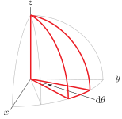 -
and then subdividing the segments into “searchlights” (like the searchlight outlined in blue in the figure below) using surfaces of constant \(\varphi\text{,}\) say with the difference between successive \(\varphi\)'s being \(\dee{\varphi}\text{,}\)
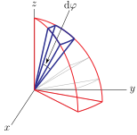 -
and then subdividing the searchlights into approximate cubes using surfaces of constant \(\rho\text{,}\) say with the difference between successive \(\rho\)'s being \(\dee{\rho}\text{,}\)
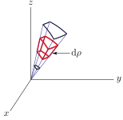
we end up with approximate cubes that look like
The dimensions of the approximate “cube” in spherical coordinates are (essentially) \(\dee{\rho}\) by \(\rho\dee{\varphi}\) by \(\rho\sin\varphi\,\dee{\theta}\text{.}\) (These dimensions are derived in more detail in the next section.) So the approximate cube has volume (essentially)
Equation 3.7.3.
Subsection 3.7.3 The Details
Here is an explanation of the edge lengths given in the above figure. Each of the 12 edges of the cube is formed by holding two of the three coordinates \(\rho\text{,}\) \(\theta\text{,}\) \(\varphi\) fixed and varying the third.
-
Four of the cube edges are formed by holding \(\theta\) and \(\varphi\) fixed and varying \(\rho\text{.}\) The intersection of a plane of fixed \(\theta\) with a cone of fixed \(\varphi\) is a straight line emanating from the origin. When we introduced slices using spheres of constant \(\rho\text{,}\) the difference between the successive \(\rho\)'s was \(\dee{\rho}\text{,}\) so those edges of the cube each have length \(\dee{\rho}\text{.}\)
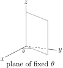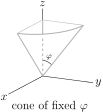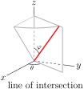 -
Four of the cube edges are formed by holding \(\theta\) and \(\rho\) fixed and varying \(\varphi\text{.}\) The intersection of a plane of fixed \(\theta\) (which contains the origin) with a sphere of fixed \(\rho\) (which is centred on the origin) is a circle of radius \(\rho\) centred on the origin. It is a line of longitude 4 .
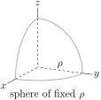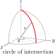When we introduced searchlights using surfaces of constant \(\varphi\text{,}\) the difference between the successive \(\varphi\)'s was \(\dee{\varphi}\text{.}\) Thus those four edges of the cube are circular arcs of radius essentially \(\rho\) that subtend an angle \(\dee{\varphi}\text{,}\) and so have length \(\rho\,\dee{\varphi}\text{.}\)
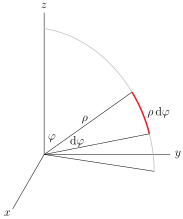 -
Four of the cube edges are formed by holding \(\varphi\) and \(\rho\) fixed and varying \(\theta\text{.}\) The intersection of a cone of fixed \(\varphi\) with a sphere of fixed \(\rho\) is a circle. As both \(\rho\) and \(\varphi\) are fixed, the circle of intersection lies in the plane \(z=\rho\cos\varphi\text{.}\) It is a line of latitude. The circle has radius \(\rho\sin\varphi\) and is centred on \(\big(0,0, \rho\cos\varphi\big)\text{.}\)
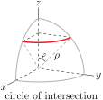When we introduced segments using surfaces of constant \(\theta\text{,}\) the difference between the successive \(\theta\)'s was \(\dee{\theta}\text{.}\) Thus these four edge of the cube are circular arcs of radius essentially \(\rho\sin\varphi\) that subtend an angle \(\dee{\theta}\text{,}\) and so have length \(\rho\sin\varphi\,\dee{\theta}\text{.}\)
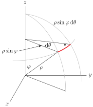
Subsection 3.7.4 Sample Integrals in Spherical Coordinates
Example 3.7.4. Ice Cream Cone.
Find the volume of the ice cream 5 cone that consists of the part of the interior of the sphere \(x^2+y^2+z^2=a^2\) that is above the \(xy\)-plane and that is inside the cone \(x^2+y^2=b^2 z^2\text{.}\) Here \(a\) and \(b\) are any two strictly positive constants.
Note that, in spherical coordinates
Consequently, in spherical coordinates, the equation of the sphere is \(\rho=a\text{,}\) and the equation of the cone is \(\tan^2\varphi = b^2\text{.}\) Let's write \(\be=\arctan b\text{,}\) with \(0 \lt \be \lt \frac{\pi}{2}\text{.}\) Here is a sketch of the part of the ice cream cone in the first octant. The volume of the full ice cream cone will be four times the volume of the part in the first octant.
We shall cut the first octant part of the ice cream cone into tiny pieces using spherical coordinates. That is, we shall cut it up using planes of constant \(\theta\text{,}\) cones of constant \(\varphi\text{,}\) and spheres of constant \(\rho\text{.}\)
-
First slice the (the first octant part of the) ice cream cone into segments by inserting many planes of constant \(\theta\text{,}\) with the various values of \(\theta\) differing by \(\dee{\theta}\text{.}\) The figure on the left below shows one segment outlined in red. Each segment
- has \(\theta\) essentially constant on the segment, and
- has \(\varphi\) running from \(0\) to \(\beta\) and \(\rho\) running from \(0\) to \(a\text{.}\)
- The leftmost segment has, essentially, \(\theta=0\) and the rightmost segment has, essentially, \(\theta=\frac{\pi}{2}\text{.}\) See the figure on the right below.
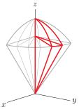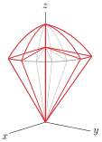 -
Concentrate on any one segment. A side view of the segment is sketched in the figure on the left below. Subdivide it into long thin searchlights by inserting many cones of constant \(\varphi\text{,}\) with the various values of \(\varphi\) differing by \(\dee{\varphi}\text{.}\) The figure on the left below shows one searchlight outlined in blue. Each searchlight
- has \(\theta\) and \(\varphi\) essentially constant on the searchlight, and
- has \(\rho\) running over \(0\le \rho\le a\text{.}\)
- The leftmost searchlight has, essentially, \(\varphi=0\) and the rightmost searchlight has, essentially, \(\varphi=\beta\text{.}\) See the figure on the right below.
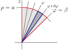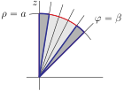 -
Concentrate on any one searchlight. Subdivide it into tiny approximate cubes by inserting many spheres of constant \(\rho\text{,}\) with the various values of \(\rho\) differing by \(\dee{\rho}\text{.}\) The figure on the left below shows the side view of one approximate cube in black. Each cube
- has \(\rho\text{,}\) \(\theta\) and \(\varphi\) all essentially constant on the cube and
- has volume \(\rho^2\sin\varphi\,\dee{\rho}\,\dee{\theta}\,\dee{\varphi}\text{,}\) by 3.7.3.
- The first cube has, essentially, \(\rho=0\) and the last cube has, essentially, \(\rho=a\text{.}\) See the figure on the right below.
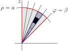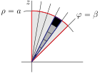
Now we can build up the volume.
- Concentrate on one approximate cube. Let's say that it contains the point with spherical coordinates \(\rho\text{,}\) \(\theta\text{,}\) \(\varphi\text{.}\) The cube has volume essentially \(\dee{V} = \rho^2\sin\varphi\,\dee{\rho}\,\dee{\theta}\,\dee{\varphi}\text{,}\) by 3.7.3.
- To get the volume any one searchlight, say the searchlight whose \(\varphi\) coordinate runs from \(\varphi\) to \(\varphi+\dee{\varphi}\text{,}\) we just add up the volumes of the approximate cubes in that searchlight, by integrating \(\rho\) from its smallest value on the searchlight, namely \(0\text{,}\) to its largest value on the searchlight, namely \(a\text{.}\) The volume of the searchlight is thus\begin{gather*} \dee{\theta}\,\dee{\varphi}\int_0^a\dee{\rho}\ \rho^2\sin\varphi \end{gather*}
- To get the volume of any one segment, say the segment whose \(\theta\) coordinate runs from \(\theta\) to \(\theta+\dee{\theta}\text{,}\) we just add up the volumes of the searchlights in that segment, by integrating \(\varphi\) from its smallest value on the segment, namely \(0\text{,}\) to its largest value on the segment, namely \(\beta\text{.}\) The volume of the segment is thus\begin{gather*} \dee{\theta}\,\int_0^\beta \dee{\varphi}\ \sin\varphi \int_0^a\dee{\rho}\ \rho^2 \end{gather*}
- To get the volume of \(\cV_1\text{,}\) the part of the ice cream cone in the first octant, we just add up the volumes of the segments that it contains, by integrating \(\theta\) from its smallest value in the octant, namely \(0\text{,}\) to its largest value on the octant, namely \(\frac{\pi}{2}\text{.}\)
- The volume in the first octant is thus\begin{align*} \text{Volume}(\cV_1) &=\int_0^{\pi/2}\dee{\theta}\,\int_0^\beta \dee{\varphi}\ \sin\varphi \int_0^a\dee{\rho}\ \rho^2\\ &=\frac{a^3}{3}\int_0^{\pi/2}\dee{\theta}\, \int_0^\beta \dee{\varphi}\ \sin\varphi\\ &=\frac{a^3}{3}\big[1-\cos\be\big]\int_0^{\pi/2}\dee{\theta}\\ &=\frac{\pi a^3}{6}\big[1-\cos\be\big] \end{align*}
- So the volume of \(\cV\text{,}\) the total (four octant) ice cream cone, is\begin{equation*} \text{Volume}(\cV)=4\,\text{Volume}(\cV_1) =\frac{4\pi a^3}{6}\big[1-\cos\be\big] \end{equation*}
We can express \(\be\) (which was not given in the statement of the original problem) in terms of \(b\) (which was in the statement of the original problem), just by looking at the triangle
The right hand and bottom sides of the triangle have been chosen so that \(\tan\be=b\text{,}\) which was the definition of \(\beta\text{.}\) So \(\cos\beta=\frac{1}{\sqrt{1+b^2}}\) and the volume of the ice cream cone is
Note that, as in Example 3.2.11, we can easily apply a couple of sanity checks to our answer.
- If \(b=0\text{,}\) so that the cone is just \(x^2+y^2=0\text{,}\) which is the line \(x=y=0\text{,}\) the total volume should be zero. Our answer does indeed give \(0\) in this case.
- In the limit \(b\rightarrow\infty\text{,}\) the angle \(\beta\rightarrow\frac{\pi}{2}\) and the ice cream cone opens up into a hemisphere of radius \(a\text{.}\) Our answer does indeed give the volume of the hemisphere, which is \(\frac{1}{2}\times\frac{4}{3}\pi a^3\text{.}\)
Example 3.7.5. Cored Apple.
A cylindrical hole of radius \(b\) is drilled symmetrically through a perfectly spherical apple of radius \(a\ge b\text{.}\) Find the volume of apple that remains.
In Example 3.2.11 we computed the volume removed, basically using cylindrical coordinates. So we could get the answer to this question just by subtracting the answer of Example 3.2.11 from \(\frac{4}{3}\pi a^3\text{.}\) Instead, we will evaluate the volume remaining as an exercise in setting up limits of integration when using spherical coordinates.
As in Example 3.2.11, let's use a coordinate system with the sphere centred on \((0,0,0)\) and with the centre of the drill hole following the \(z\)-axis. Here is a sketch of the apple that remains in the first octant. It is outlined in red. By symmetry the total amount of apple remaining will be eight times the amount from the first octant.
- First slice the first octant part of the remaining apple into segments by inserting many planes of constant \(\theta\text{,}\) with the various values of \(\theta\) differing by \(\dee{\theta}\text{.}\) The leftmost segment has, essentially, \(\theta=0\) and the rightmost segment has, essentially, \(\theta=\frac{\pi}{2}\text{.}\)
-
Each segment, viewed from the side, looks like
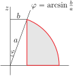Subdivide it into long thin searchlights by inserting many cones of constant \(\varphi\text{,}\) with the various values of \(\varphi\) differing by \(\dee{\varphi}\text{.}\) The figure on below shows one searchlight outlined in blue. Each searchlight
- has \(\theta\) and \(\varphi\) essentially constant on the searchlight.
- The top searchlight has, essentially, \(\varphi=\arcsin\frac{b}{a}\) and the bottom searchlight has, essentially, \(\varphi=\frac{\pi}{2}\text{.}\)
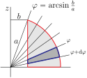 -
Concentrate on any one searchlight. Subdivide it into tiny approximate cubes by inserting many spheres of constant \(\rho\text{,}\) with the various values of \(\rho\) differing by \(\dee{\rho}\text{.}\) The figure on the left below shows the side view of one approximate cube in black. Each cube
- has \(\rho\text{,}\) \(\theta\) and \(\varphi\) all essentially constant on the cube and
- has volume \(\dee{V}=\rho^2\sin\varphi\,\dee{\rho}\,\dee{\theta}\,\dee{\varphi}\text{,}\) by 3.7.3.
- The figure on the right below gives an expanded view of the searchlight. From it, we see (after a little trig) that the first cube has, essentially, \(\rho=\frac{b}{\sin\varphi}\) and the last cube has, essentially, \(\rho=a\) (the radius of the apple).
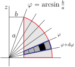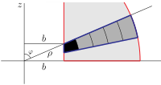
Now we can build up the volume.
- Concentrate on one approximate cube. Let's say that it contains the point with spherical coordinates \(\rho\text{,}\) \(\theta\text{,}\) \(\varphi\text{.}\) The cube has volume essentially \(\dee{V} = \rho^2\sin\varphi\,\dee{\rho}\,\dee{\theta}\,\dee{\varphi}\text{,}\) by 3.7.3.
- To get the volume any one searchlight, say the searchlight whose \(\varphi\) coordinate runs from \(\varphi\) to \(\varphi+\dee{\varphi}\text{,}\) we just add up the volumes of the approximate cubes in that searchlight, by integrating \(\rho\) from its smallest value on the searchlight, namely \(\frac{b}{\sin\varphi}\text{,}\) to its largest value on the searchlight, namely \(a\text{.}\) The volume of the searchlight is thus\begin{gather*} \dee{\theta}\,\dee{\varphi}\int_{\frac{b}{\sin\varphi}}^a \dee{\rho}\ \rho^2\sin\varphi \end{gather*}
- To get the volume of any one segment, say the segment whose \(\theta\) coordinate runs from \(\theta\) to \(\theta+\dee{\theta}\text{,}\) we just add up the volumes of the searchlights in that segment, by integrating \(\varphi\) from its smallest value on the segment, namely \(\arcsin\frac{b}{a}\text{,}\) to its largest value on the segment, namely \(\frac{\pi}{2}\text{.}\) The volume of the searchlight is thus\begin{gather*} \dee{\theta}\,\int_{\arcsin\frac{b}{a}}^{\frac{\pi}{2}} \int_{\frac{b}{\sin\varphi}}^a \dee{\rho}\ \rho^2\sin\varphi \end{gather*}
- To get the volume of the remaining part of the apple in the first octant, we just add up the volumes of the segments that it contains, by integrating \(\theta\) from its smallest value in the octant, namely \(0\text{,}\) to its largest value on the octant, namely \(\frac{\pi}{2}\text{.}\) The volume in the first octant is thus\begin{align*} \text{Volume}(\cV_1) &=\int_0^{\pi/2}\dee{\theta} \int_{\arcsin\frac{b}{a}}^{\frac{\pi}{2}} \dee{\varphi} \int_{\frac{b}{\sin\varphi}}^{a} \dee{\rho}\ \rho^2\sin\varphi \end{align*}
-
Now we just have to integrate
\begin{align*} \text{Volume}(\cV_1) &=\frac{1}{3}\int_0^{\pi/2}\dee{\theta}\, \int_{\arcsin\frac{b}{a}}^{\frac{\pi}{2}} \dee{\varphi}\ \sin\varphi \left[a^3-\frac{b^3}{\sin^3\varphi}\right]\\ &=\frac{1}{3}\int_0^{\pi/2}\dee{\theta}\, \int_{\arcsin\frac{b}{a}}^{\frac{\pi}{2}} \dee{\varphi}\ \left[a^3 \sin\varphi- b^3\csc^2\varphi\right]\\ &=\frac{1}{3}\int_0^{\pi/2}\dee{\theta}\ \left[-a^3 \cos\varphi + b^3\cot\varphi\right] _{\arcsin\frac{b}{a}}^{\frac{\pi}{2}}\\ &\hskip1in\text{since } \int \csc^2\varphi\ \dee{\varphi} =-\cot\varphi+C\\ &=\frac{\pi}{6} \left[-a^3 \cos\varphi + b^3\cot\varphi\right] _{\arcsin\frac{b}{a}}^{\frac{\pi}{2}} \end{align*}Now \(\cos\frac{\pi}{2} = \cot\frac{\pi}{2}=0\) and, if we write \(\al=\arcsin\frac{b}{a}\text{,}\)
\begin{align*} \text{Volume}(\cV_1) &=\frac{\pi}{6} \left[a^3 \cos\al - b^3\cot\al\right] \end{align*}From the triangle below, we have \(\cos\al =\frac{\sqrt{a^2-b^2}}{a} \) and \(\cot\al=\frac{\sqrt{a^2-b^2}}{b}\text{.}\)
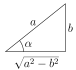So
\begin{align*} \text{Volume}(\cV_1) &=\frac{\pi}{6} \left[a^2 \sqrt{a^2-b^2} - b^2\sqrt{a^2-b^2}\right] =\frac{\pi}{6}\big[a^2-b^2\big]^{3/2} \end{align*}
The full (eight octant) volume of the remaining apple is thus
We can, yet again, apply the sanity checks of Example 3.2.11 to our answer.
- If the radius of the drill bit \(b=0\text{,}\) no apple is removed at all. So the total volume remaining should be \(\frac{4}{3}\pi a^3\text{.}\) Our answer does indeed give this.
- If the radius of the drill bit \(b=a\text{,}\) the radius of the apple, then the entire apple disappears. So the remaining apple should have volume \(0\text{.}\) Again, our answer gives this.
As a final check note that the sum of the answer to Example 3.2.11 and the answer to this Example is \(\frac{4}{3}\pi a^3\text{,}\) as it should be.
Exercises 3.7.5 Exercises
Exercises — Stage 1
1.
Use \((\rho,\theta,\varphi)\) to denote spherical coordinates.
- Draw \(\varphi=0\text{.}\)
- Draw \(\varphi=\frac{\pi}{4}\text{.}\)
- Draw \(\varphi=\frac{\pi}{2}\text{.}\)
- Draw \(\varphi=\frac{3\pi}{4}\text{.}\)
- Draw \(\varphi=\pi\text{.}\)
2.
Sketch the point with the specified spherical coordinates.
- \(\rho=0\text{,}\) \(\theta=0.1\pi\text{,}\) \(\varphi=0.7\pi\)
- \(\rho=1\text{,}\) \(\theta=0.3\pi\text{,}\) \(\varphi=0\)
- \(\rho=1\text{,}\) \(\theta=0\text{,}\) \(\varphi=\frac{\pi}{2}\)
- \(\rho=1\text{,}\) \(\theta=\frac{\pi}{3}\text{,}\) \(\varphi=\frac{\pi}{2}\)
- \(\rho=1\text{,}\) \(\theta=\frac{\pi}{2}\text{,}\) \(\varphi=\frac{\pi}{2}\)
- \(\rho=1\text{,}\) \(\theta=\frac{\pi}{3}\text{,}\) \(\varphi=\frac{\pi}{6}\)
3.
Convert from Cartesian to spherical coordinates.
- \(\displaystyle (-2,0,0)\)
- \(\displaystyle (0,3,0)\)
- \(\displaystyle (0,0,-4)\)
- \(\displaystyle \left(-\frac{1}{\sqrt{2}},\frac{1}{\sqrt{2}},\sqrt{3}\right)\)
4.
Convert from spherical to Cartesian coordinates.
- \(\rho=1\text{,}\) \(\theta=\frac{\pi}{3}\text{,}\) \(\varphi=\frac{\pi}{6}\)
- \(\rho=2\text{,}\) \(\theta=\frac{\pi}{2}\text{,}\) \(\varphi=\frac{\pi}{2}\)
5.
Rewrite the following equations in spherical coordinates.
- \(\displaystyle z^2=3x^2+3y^2\)
- \(\displaystyle x^2+y^2+(z-1)^2=1\)
- \(\displaystyle x^2+y^2=4\)
6. ✳.
Using spherical coordinates and integration, show that the volume of the sphere of radius \(1\) centred at the origin is \(4\pi/3\text{.}\)
Exercises — Stage 2
7. ✳.
Consider the region \(E\) in \(3\)-dimensions specified by the spherical inequalities
- Draw a reasonably accurate picture of \(E\) in 3-dimensions. Be sure to show the units on the coordinates axes.
- Find the volume of E.
8. ✳.
Use spherical coordinates to evaluate the integral
where \(D\) is the solid enclosed by the cone \(z = \sqrt{x^2 + y^2}\) and the sphere \(x^2 + y^2 + z^2 = 4\text{.}\) That is, \((x,y,z)\) is in \(D\) if and only if \(\sqrt{x^2 + y^2}\le z\) and \(x^2 + y^2 + z^2 \le 4\text{.}\)
9.
Use spherical coordinates to find
- The volume inside the cone \(z=\sqrt{x^2+y^2}\) and inside the sphere \(x^2+y^2+z^2=a^2\text{.}\)
- \(\tripInt_R x\, \dee{V}\) and \(\tripInt_R z\, \dee{V}\) over the part of the sphere of radius \(a\) that lies in the first octant.
- The mass of a spherical planet of radius \(a\) whose density at distance \(\rho\) from the center is \(\de=A/(B+\rho^2)\text{.}\)
- The volume enclosed by \(\ \rho=a(1-\cos\varphi).\) Here \(\rho\) and \(\varphi\) refer to the usual spherical coordinates.
10. ✳.
Consider the hemispherical shell bounded by the spherical surfaces
and above the plane \(z = 0\text{.}\) Let the shell have constant density \(D\text{.}\)
- Find the mass of the shell.
- Find the location of the center of mass of the shell.
11. ✳.
Let
where \(T\) is the eighth of the sphere \(x^2 + y^2 + z^2 \le 1\) with \(x,y,z \ge 0\text{.}\)
- Sketch the volume \(T\text{.}\)
- Express \(I\) as a triple integral in spherical coordinates.
- Evaluate \(I\) by any method.
12. ✳.
Evaluate \(W = \tripInt_Q xz\ \dee{V}\text{,}\) where \(Q\) is an eighth of the sphere \(x^2 + y^2 + z^2 \le 9\) with \(x\text{,}\) \(y\text{,}\) \(z \ge 0\text{.}\)
13. ✳.
Evaluate \(\tripInt_{\bbbr^3} {\big[1+{(x^2+y^2+z^2)}^3\big]}^{-1}\ \dee{V}\text{.}\)
14. ✳.
Evaluate
by changing to spherical coordinates.
15.
Evaluate the volume of a circular cylinder of radius \(a\) and height \(h\) by means of an integral in spherical coordinates.
16. ✳.
Let \(B\) denote the region inside the sphere \(x^2+y^2+z^2=4\) and above the cone \(x^2+y^2=z^2\text{.}\) Compute the moment of inertia
17. ✳.
- Evaluate \(\ds\tripInt_\Om z\,\dee{V}\) where \(\Om\) is the three dimensional region in the first octant \(x\ge 0\text{,}\) \(y\ge 0\text{,}\) \(z\ge 0\text{,}\) occupying the inside of the sphere \(x^2+y^2+z^2=1\text{.}\)
- Use the result in part (a) to quickly determine the centroid of a hemispherical ball given by \(z\ge 0\text{,}\) \(x^2+y^2+z^2\le 1\text{.}\)
18. ✳.
Consider the top half of a ball of radius 2 centred at the origin. Suppose that the ball has variable density equal to \(9z\) units of mass per unit volume.
- Set up a triple integral giving the mass of this half-ball.
- Find out what fraction of that mass lies inside the cone\begin{equation*} z=\sqrt{x^2+y^2} \end{equation*}
Exercises — Stage 3
19. ✳.
Find the limit or show that it does not exist
20. ✳.
A certain solid \(V\) is a right-circular cylinder. Its base is the disk of radius \(2\) centred at the origin in the \(xy\)-plane. It has height \(2\) and density \(\sqrt{x^2 + y^2}\text{.}\)
A smaller solid \(U\) is obtained by removing the inverted cone, whose base is the top surface of \(V\) and whose vertex is the point \((0, 0, 0)\text{.}\)
- Use cylindrical coordinates to set up an integral giving the mass of \(U\text{.}\)
- Use spherical coordinates to set up an integral giving the mass of \(U\text{.}\)
- Find that mass.
21. ✳.
A solid is bounded below by the cone \(z\!=\!\sqrt{x^2\!+\!y^2}\ \) and above by the sphere \(x^2+y^2+z^2 = 2\text{.}\) It has density \(\de(x,y,z) = x^2 + y^2\text{.}\)
- Express the mass \(M\) of the solid as a triple integral, with limits, in cylindrical coordinates.
- Same as (a) but in spherical coordinates.
- Evaluate \(M\text{.}\)
22. ✳.
Let
where \(E\) is the eighth of the sphere \(x^2+y^2+z^2\le 1\) with \(x,y,z\ge 0\text{.}\)
- Express \(I\) as a triple integral in spherical coordinates.
- Express \(I\) as a triple integral in cylindrical coordinates.
- Evaluate \(I\) by any method.
23. ✳.
Let
where \(T\) is the solid region bounded below by the cone \(z =\sqrt{3x^2+3y^2}\) and above by the sphere \(x^2 + y^2 + z^2 = 9\text{.}\)
- Express \(I\) as a triple integral in spherical coordinates.
- Express \(I\) as a triple integral in cylindrical coordinates.
- Evaluate \(I\) by any method.
24. ✳.
Let \(E\) be the “ice cream cone” \(x^2 + y^2 + z^2 \le 1\text{,}\) \(x^2 + y^2 \le z^2\) , \(z \ge 0\text{.}\) Consider
- Write \(J\) as an iterated integral, with limits, in cylindrical coordinates.
- Write \(J\) as an iterated integral, with limits, in spherical coordinates.
- Evaluate \(J\text{.}\)
25. ✳.
The body of a snowman is formed by the snowballs \(x^2 + y^2 + z^2 = 12\) (this is its body) and \(x^2 + y^2 + (z - 4)^2 = 4\) (this is its head).
- Find the volume of the snowman by subtracting the intersection of the two snow balls from the sum of the volumes of the snow balls. [Recall that the volume of a sphere of radius \(r\) is \(\frac{4\pi}{3} r^3\text{.}\)]
-
We can also calculate the volume of the snowman as a sum of the following triple integrals:
- \begin{equation*} \int_0^{\frac{2\pi}{3}} \int_0^{2\pi} \int_0^2 \rho^2\sin{\varphi} \ \dee{\rho}\,\dee{\theta}\,\dee{\varphi} \end{equation*}
- \begin{equation*} \int_0^{2\pi} \int_0^{\sqrt{3}} \int_{\sqrt{3}\,r}^{4-\frac{r}{\sqrt{3}}} r\ \dee{z}\,\dee{r}\,\dee{\theta} \end{equation*}
- \begin{equation*} \int_{\frac{\pi}{6}}^\pi \int_0^{2\pi} \int_0^{2\sqrt{3}} \rho^2\sin(\varphi)\ \dee{\rho}\,\dee{\theta}\,\dee{\varphi} \end{equation*}
Circle the right answer from the underlined choices and fill in the blanks in the following descriptions of the region of integration for each integral. [Note: We have translated the axes in order to write down some of the integrals above. The equations you specify should be those before the translation is performed.]
- The region of integration in (1) is a part of the snowman's\begin{equation*} \underline{ \text{ body / head / body and head} } \end{equation*}It is the solid enclosed by the\begin{equation*} \underline{\text{sphere / cone}} \end{equation*}defined by the equation\begin{equation*} \rule{30ex}{0.2ex} \end{equation*}and the\begin{equation*} \underline{\text{sphere / cone}} \end{equation*}defined by the equation\begin{equation*} \rule{30ex}{0.2ex} \end{equation*}
- The region of integration in (2) is a part of the snowman's\begin{equation*} \underline{ \text{ body / head / body and head} } \end{equation*}It is the solid enclosed by the\begin{equation*} \underline{\text{sphere / cone}} \end{equation*}defined by the equation\begin{equation*} \rule{30ex}{0.2ex} \end{equation*}and the\begin{equation*} \underline{\text{sphere / cone}} \end{equation*}defined by the equation\begin{equation*} \rule{30ex}{0.2ex} \end{equation*}
- The region of integration in (3) is a part of the snowman's\begin{equation*} \underline{ \text{ body / head / body and head} } \end{equation*}It is the solid enclosed by the\begin{equation*} \underline{\text{sphere / cone}} \end{equation*}defined by the equation\begin{equation*} \rule{30ex}{0.2ex} \end{equation*}and the\begin{equation*} \underline{\text{sphere / cone}} \end{equation*}defined by the equation\begin{equation*} \rule{30ex}{0.2ex} \end{equation*}
26. ✳.
-
Find the volume of the solid inside the surface defined by the equation \(\rho = 8 \sin(\varphi)\) in spherical coordinates.
You may use that
\begin{equation*} \int \sin^4(\varphi) =\frac{1}{32}\big(12\varphi -8\sin(2\varphi) +\sin(4\varphi)\big) +C \end{equation*} - Sketch this solid or describe what it looks like.
27. ✳.
Let \(E\) be the solid
and consider the integral
- Write the integral \(I\) in cylindrical coordinates.
- Write the integral \(I\) in spherical coordinates.
- Evaluate the integral \(I\) using either form.
28. ✳.
Consider the iterated integral
where \(a\) is a positive constant.
- Write \(I\) as an iterated integral in cylindrical coordinates.
- Write \(I\) as an iterated integral in spherical coordinates.
- Evaluate I using whatever method you prefer.
29. ✳.
The solid \(E\) is bounded below by the paraboloid \(z = x^2 + y^2\) and above by the cone \(z=\sqrt{x^2+y^2}\text{.}\) Let
- Write \(I\) in terms of cylindrical coordinates. Do not evaluate.
- Write \(I\) in terms of spherical coordinates. Do not evaluate.
- Calculate \(I\text{.}\)
30. ✳.
Let \(S\) be the region on the first octant (so that \(x,y,z\ge 0\)) which lies above the cone \(z=\sqrt{x^2+y^2}\) and below the sphere \((z-1)^2 +x^2+y^2=1\text{.}\) Let \(V\) be its volume.
- Express \(V\) as a triple integral in cylindrical coordinates.
- Express \(V\) as an triple integral in spherical coordinates.
- Calculate \(V\) using either of the integrals above.
31. ✳.
A solid is bounded below by the cone \(z=\sqrt{3x^2+3y^2}\) and above by the sphere \(x^2+y^2+z^2=9\text{.}\) It has density \(\de(x,y,z)=x^2+y^2\text{.}\)
- Express the mass \(m\) of the solid as a triple integral in cylindrical coordinates.
- Express the mass \(m\) of the solid as a triple integral in spherical coordinates.
- Evaluate \(m\text{.}\)